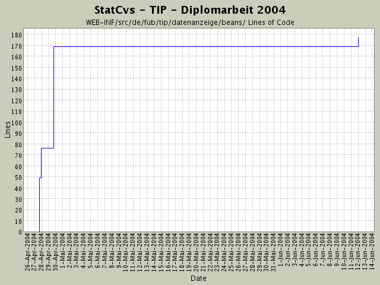

Summary Period: 2004-04-27 to 2004-06-11
[root]/WEB-INF/src/de/fub/tip/datenanzeige/beans

Total Lines Of Code:
177 (2004-06-13 13:05)
| Author | Changes | Lines of Code | Lines per Change |
|---|---|---|---|
| hirsch | 9 (100.0%) | 221 (100.0%) | 24.5 |
Alle VOs sind jetzt in ihren toString()-Methoden
ohne NullPointer-Aufkommen - damit kann man auch halbgeladene
Bohnen ausgeben und kriegt keine Fehler mehr !
10 lines of code changed in:
Anzeige der Profileigenschaften verfeinert für Screenshots
3 lines of code changed in:
aboStatus entfernt und
Bei SightGruppeVO-Anzeige die BEschreibung hinzugefügt
2 lines of code changed in:
ActionForm kann sowohl für die Anzeige des Themen- als auch des Sehenswürdigkeitsgruppenprofils benutzt werden.
6 lines of code changed in:
TopicVO an neue HTML-Checkbox Struktur angepasst (attribut aboStatus)
Bean zur Anzeige umbenannt, da es sowhl zur Topic- als auch zur SightGruppenAnzeige benutzt wird -
ist ebend OO ;-.^
122 lines of code changed in:
Umbau und Umstellung auf Collection in ActionForm .
mal sehen, was passiert ;:-^
29 lines of code changed in:
Bean hinzugefügt zur Umwandlung von SightGruppeVo zur ANzeige mit
Multibox ...
49 lines of code changed in:
Generated by StatCvs v0.2-dev